Concentric Concept
From any appropriate formation (half the dancers must be centers and half must be outsides): The centers do the call in their group, while the outsides work with each other and do the call around the outside. The following diagrams show who works with whom on a Concentric call:
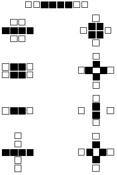
The last two formations shown are really the same; the one on the left is used if the caller only says "Concentric..." or the Concentric call doesn't start in diamonds. The one on the right is used when the caller says "Concentric Diamond, ..." or when the Concentric call can only be done from diamonds (e.g., Concentric Diamond Circulate).
If the Concentric call is being done from general lines or general columns, and the call starts and ends in a 2x2 box (e.g., Concentric Star Thru), the following rule applies: If the ends begin as though in columns, they finish as though in columns; if they begin in lines, they finish in lines. e.g., Concentric Star Thru:
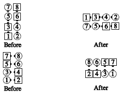
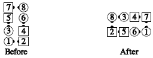
If the Concentric call ends in a 2x2 box but starts elsewhere (e.g., Concentric Recycle from a tidal wave), the following rule applies: The outside dancers adjust so that the long axis of the ending formation is at right angles to the long axis of the starting formation. For example, Concentric Crossfire:
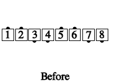 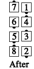
Concentric Recycle:
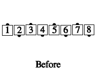
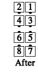
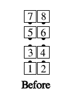
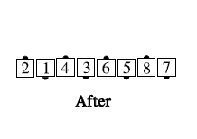
Concentric Reverse Explode:
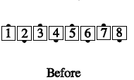

Concentric Single Hinge:
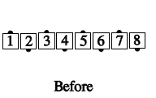 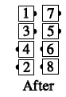
Concentric Step and Fold:
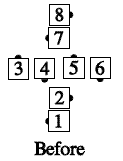 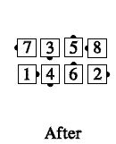
Concentric Diamond, Step and Fold:
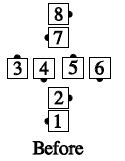 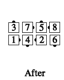
Concentric Trade the Wave:
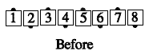 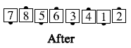
Common applications include:
- From starting DPT: Star Thru, Slide Thru, Pass In/Out, Touch 1/4
- From completed DPT: Chase Right, Shakedown
- From tidal wave: Recycle, Ah So
- From tidal line: Wheel & Deal, Turn and Deal, 1/2 Tag
© Copyright 1983, 1986-1988, 1995-2017 Bill Davis, John Sybalsky and CALLERLAB Inc., The International Association of Square Dance Callers. Permission to reprint, republish, and create derivative works without royalty is hereby granted, provided this notice appears. Publication on the Internet of derivative works without royalty is hereby granted provided this notice appears. Permission to quote parts or all of this document without royalty is hereby granted, provided this notice is included. Information contained herein shall not be changed nor revised in any derivation or publication.